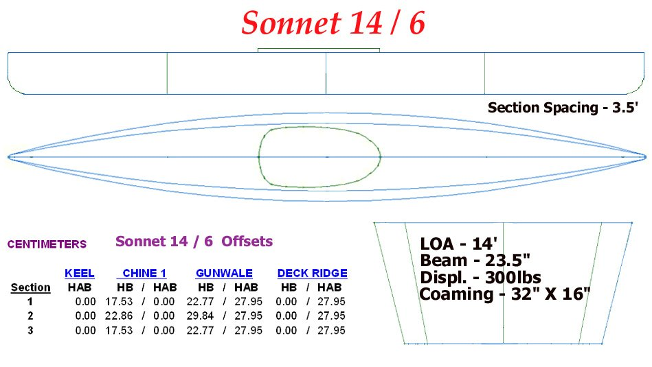

| Menu Previous Page Next Page | |
|

The Sonnet 14/6 is 14ft LOA and uses 6 Folbot Kodiak 13.5ft sponsons. This design is a smaller singles version of the Sonnet Double ( 15.5/6).
The Sonnet 14/6 prototype is currently under construction (Jan 2010). The vertical stems have a 6" radius curve making for a sloping waterline entry.
The vertical stem shape provides a long waterline length (LWL) and allows the use of 6 X 13.5' sponsons. In this configuration, fewer spares are required.
It differs from the Sonnet Double in it's use of one side stringer (chine) vs two side stringers for the double. The use of a third sponson per side greatly
increases displacement and permits a drier ride than the Sonnet 14/4 and 16/4 designs.
|
|